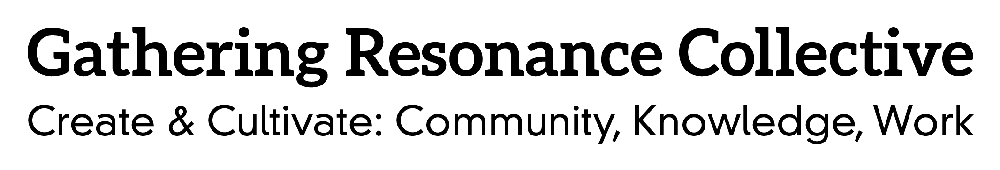

The Gathering Resonance Collective(GRC) is a group of people interested in creating cultures of positivity, interconnectiveness, and mindfuleness. Changing how we interact, share space, and spend our time. We have open work or study hours. Check our calendar for open hours and events. Connect with us at 920-238-3948 or via Telegram and connect to GRC_Jess.